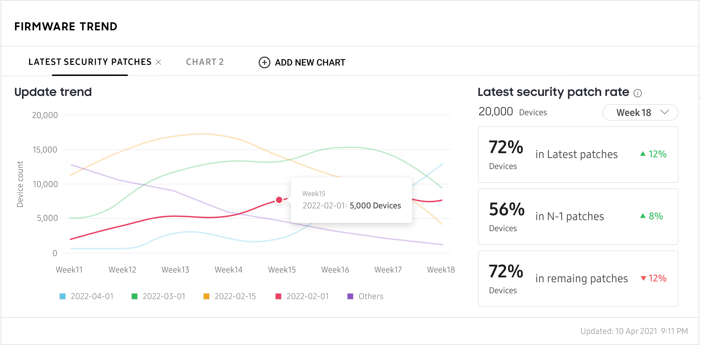
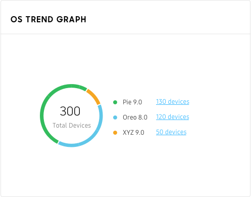
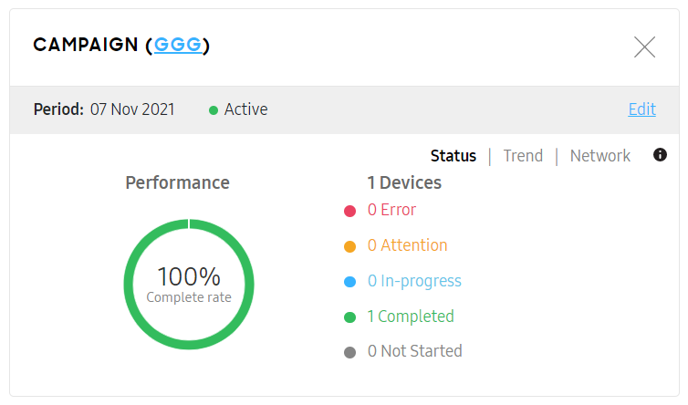
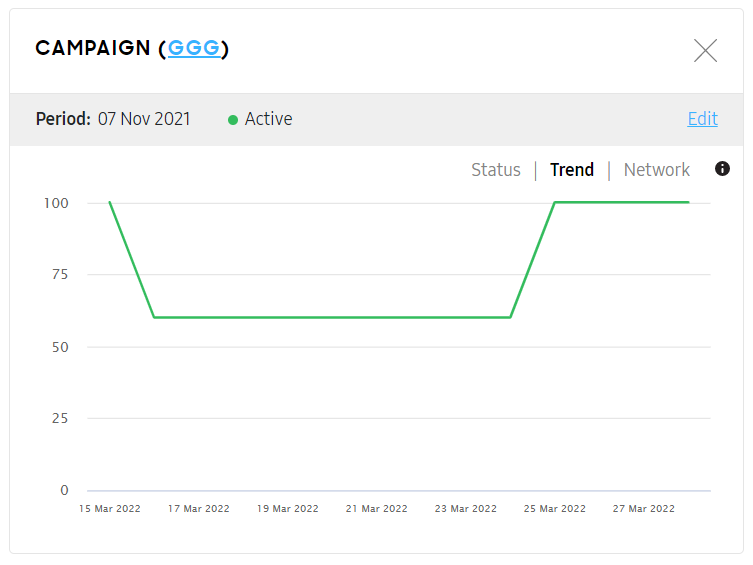
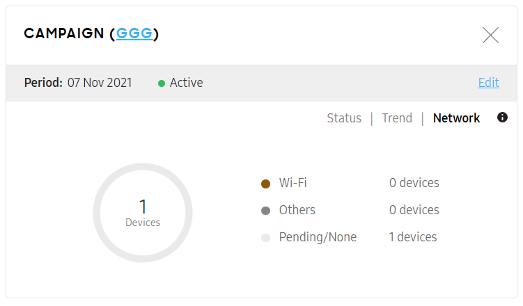
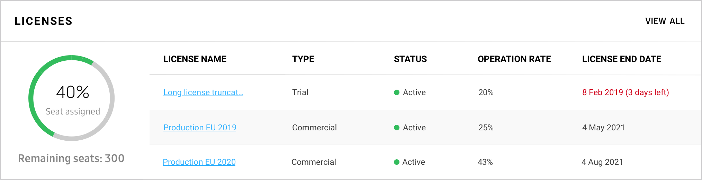

Monitor operations
Last updated August 5th, 2025
This section describes the different areas of Knox E-FOTA that you can monitor in your dashboard.
When you sign in to the Knox E-FOTA admin portal, you land on the dashboard. You can return to it at any time by clicking the Dashboard tab on the left navigation.
Firmware updates
You can view the firmware trends for your device fleet by inspecting the default Update trend chart, which shows the number of devices that don’t yet have the target firmware version. Click View details to get more information on upcoming firmware.
By default, firmware updates don’t apply to the device when it’s currently focused on a pinned app. You can allow firmware updates even when a pinned app is focused by adding the E-FOTA client app to your EMM’s list of allowed apps for lock task mode — which is responsible for kiosk functionality — and app pinning.
Device status
The DEVICE UPDATE STATUS widget shows a high-level view of the statuses of devices in the organization. Click a status to view the devices that fall under it. Clicking View all takes you to the Devices tab.
The different statuses are as follows:
-
Completed — These devices are up to date and no operations are pending.
-
In-Progress — These devices are waiting for or are currently in the process of a firmware download or installation.
-
Attention — These devices require you or the device user to take action. For example, a license is invalid and needs to be replaced.
-
Error — These devices failed to download or install firmware, or have experienced a campaign error.
-
Not Started — These devices have been added but the Knox E-FOTA client app has not been installed, or the campaign has not started yet.
Recent activity
The Recent Activity widget shows a log of the events that occurred since the user was last signed in. Clicking View all takes you to the Activity Log tab.
Possible event categories are as follows:
- Devices
- Campaigns
- Licenses
- Resellers
- EMM groups
- Administrators & Roles
Firmware trend
The FIRMWARE TREND displays how many devices are on which firmware version grouped by security patch level over the past 8 weeks. The graph updates every Monday (UTC±00:00). You can click on the firmware trends to see additional information about the devices on that security patch, such as firmware version, model, sales code, CSC, security patch, and device count.
You can add up to two additional graphs with custom filters that only display devices with specific campaign, model, sales code, or CSC.

The Latest security patch rate shows the percentage of devices that are on their latest patch, percentage of devices on the patch before their latest patch, and percentage of devices on any earlier patches. The firmware trend only considers the patches that are installed on your devices. It ignores any released patches that aren’t installed.
Click on a point on a trend line to open a side panel with additional information. You can also download the firmware trend data as a CSV file, which allows you to share this data with other administrators in your organization, and perform data analyses with Excel.
The exported CSV file shows how many devices of each combination of model, sales code, CSC, and Android version are in each security patch level.
OS trend graph
The OS TREND GRAPH shows a pie chart of the different OS versions of all enrolled devices. The chart includes a device count for each OS version. To view more details, click a device count next to the OS version you’re interested in. The device list filters for the OS version you selected.

Active campaign
For each campaign you activate, a CAMPAIGN widget appears for it in the dashboard. You can have multiple active campaign widgets. Active campaign widgets show the following details.
-
The Status view shows the following:
-
Complete rate
-
Error — Number of devices which encountered an error.
-
Attention — Number of devices that require your attention. When you click this, the Devices list is displayed, filtered to show the devices that need your action.
-
In-progress — Number of devices that have yet to download or install firmware updates.
-
Completed — Number of devices which are up to date with target firmware.
-
Not Started — Number of devices which have not started firmware updates.

The Status view is updated in real time.
-
-
The Trend view shows the success rate of the campaign over the last two weeks. This view is updated once a day.
Campaigns that were activated before KCS 1.32 will not have the trend view.

The Network view shows a pie chart of which networks were used by devices to install firmware.

You can do the following:
- View more details of the campaign’s progress by hovering over the graph.
- Go to the campaign by clicking the campaign name.
- Unpin a campaign widget by clicking the X icon on it.
- Pin a campaign you’ve previously unpinned.
To pin an active campaign:
- Click Select Campaign to Pin Here.
- In the drop-down menu, select the campaign you want to pin.
- Click Add.
Canceled or expired campaign
Canceled or expired campaign widgets are shown for 7 days from the time they ended. They show pie charts showing the success rate for each device model and device status. You can view more details by hovering over the graphs. You can have multiple canceled or expired campaign widgets.
Licenses
The LICENSES widget lists up to 3 licenses, sorted by end date. Clicking View all takes you to the Licenses tab, which contains all licenses in the account and their details.
This widget becomes available as soon as you add a license. It contains the following:
-
A pie chart that shows the total license operation rate; that is, the total number of license seats currently assigned over the total number of license seats from all commercial and trial licenses in the account.
-
A list of up to three licenses with the most number of seats in the account. For each license, the following details are shown:
-
Type — Commercial or Trial.
-
Status — Active, Registered (The license has been added to the account but is not yet active), Expired, or Terminated.
-
Operation rate — Number of assigned seats over the total number of seats in this license.
-
End date — Date the license expires.
To view the details of a particular license, click on that license’s name.
-
-
The remaining number of seats from all commercial and trial licenses in the account.

On this page
Is this page helpful?